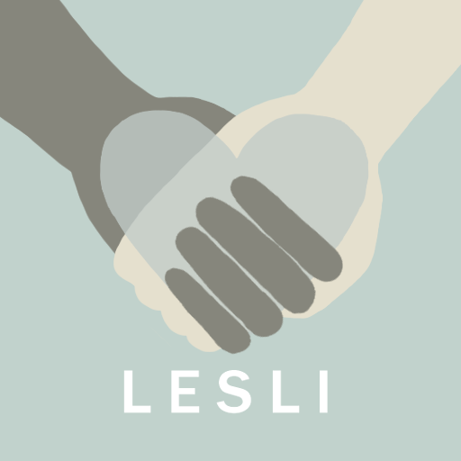

Safe space for teenagers by teenagers. A place where teenagers can focus on maintaining a positive mental health and be provided with resources and support to do so. Our aim is to help as many people as possible take care of their mental health through asking users to submit an anonymous response to a survey weekly. We will use this data to provide the appropriate infomation which will suggest ways in which you can look after your wellbeing and sustain a happy mindset.
